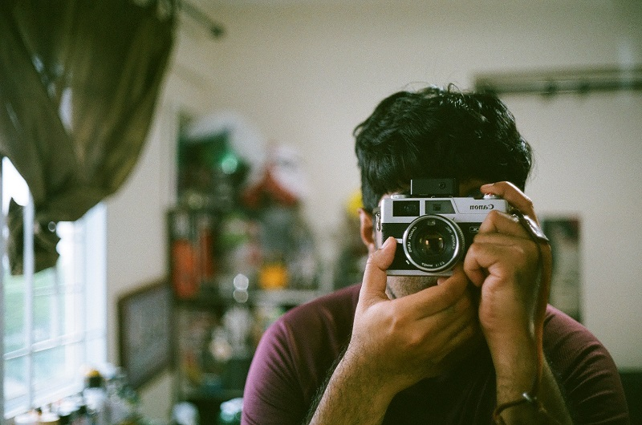

I Don't Want to Take Photos On My Mobile Phones
Capturing The Moment In Photography
That thought has probably occurred to you at some point in your life. When we could be snuggled up in bed, warm and cosy, there's no good reason to wake up at 4 a.m. to capture pictures of the sunrise. We could be watching TV or hanging out with our friends, but instead we spend countless hours perfecting our compositions and mastering the principles of photography.
The question is why we keep going even on the days when we feel completely uninspired and it's the hardest thing in the world to hit the shutter button. Can you explain what it is about images that makes them so captivating? If they don't, you should rethink that decision.
Let’s get started.